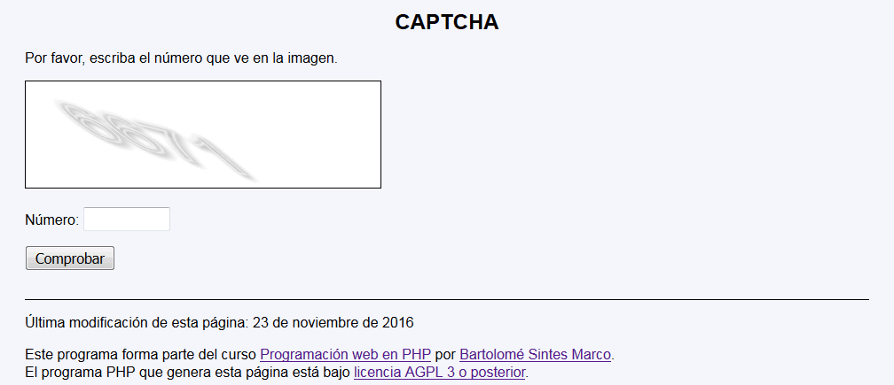
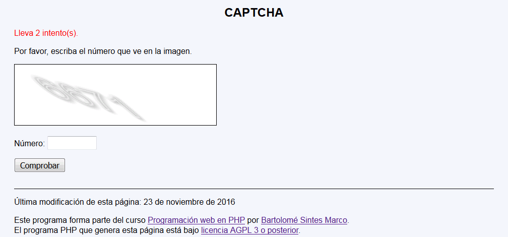
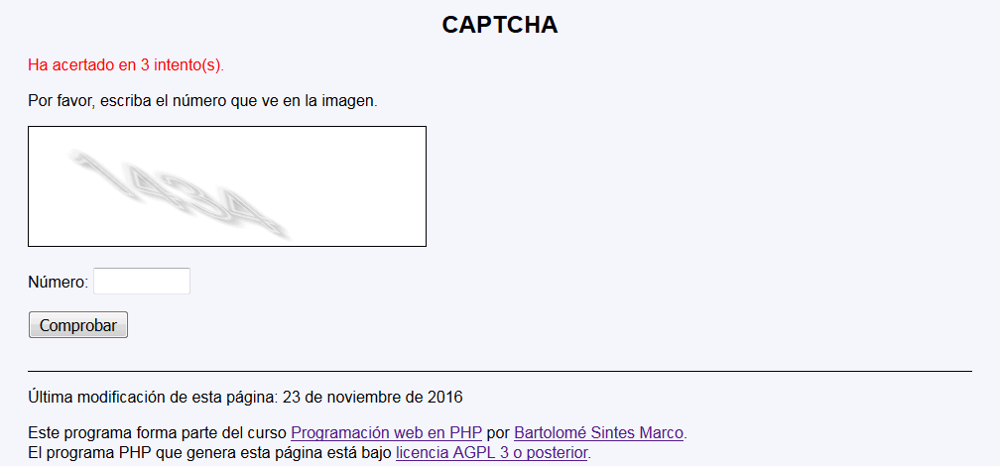

En este ejercicio se debe crear un programa que muestre un captcha elemental y pida al usuario el número correspondiente hasta que acierte, indicando el número de intentos realizados.



<h1>Captcha</h1>
<p style="color: red">Lleva 1 intento(s).</p>
<p>Por favor, escriba el número que ve en la imagen.</p>
<p>
<svg version="1.1" xmlns="http://www.w3.org/2000/svg"
width="400" height="120" style="background-color: white; border: black 1px solid">
<filter id="dropShadow">
<feGaussianBlur in="SourceAlpha" stdDeviation="3" />
<feOffset dx="2" dy="4" />
<feMerge>
<feMergeNode />
<feMergeNode in="SourceGraphic" />
</feMerge>
</filter>
<text x="0" y="60" style="font-size: 60px; stroke: #eee; fill: none" filter="url(#dropShadow)"
transform="skewX(50) skewY(20)">1434</text>
</svg>
<form action="captcha_2.php" method="get">
<p>Número: <input type="text" name="numero" size="10" /></p>
<p><input type="submit" value="Comprobar" /></p>
</form>
Nota: El día del examen los alumnos no tienen acceso a este ejemplo, solamente tienen acceso a las capturas del apartado anterior.
Un ejemplo de programa puede probarse en la ventana siguiente: